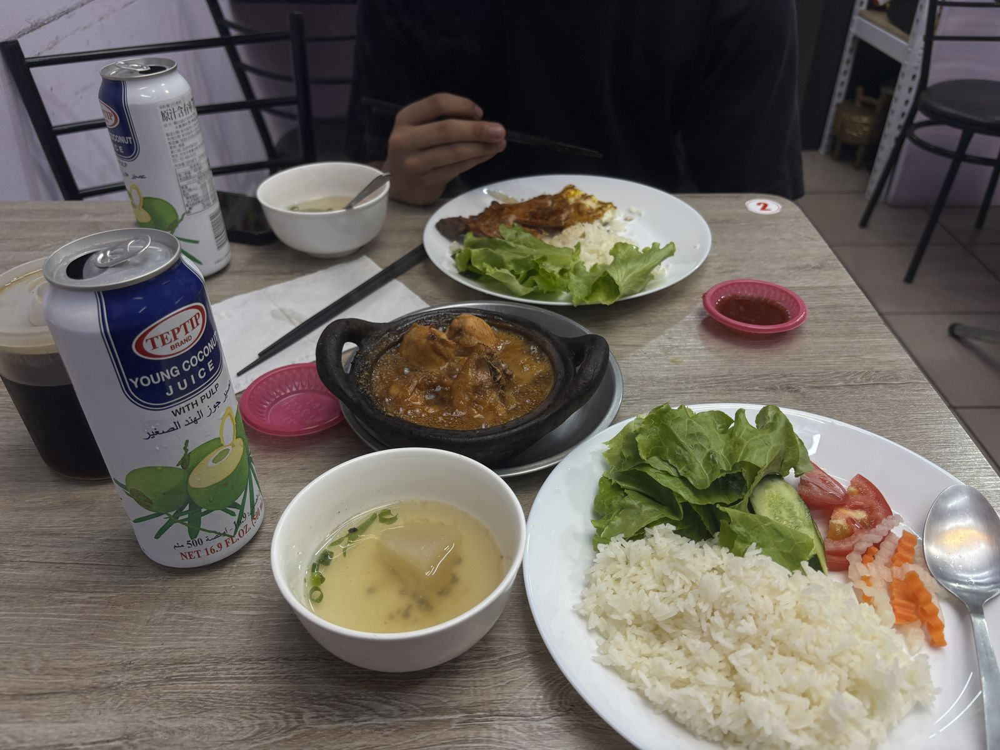
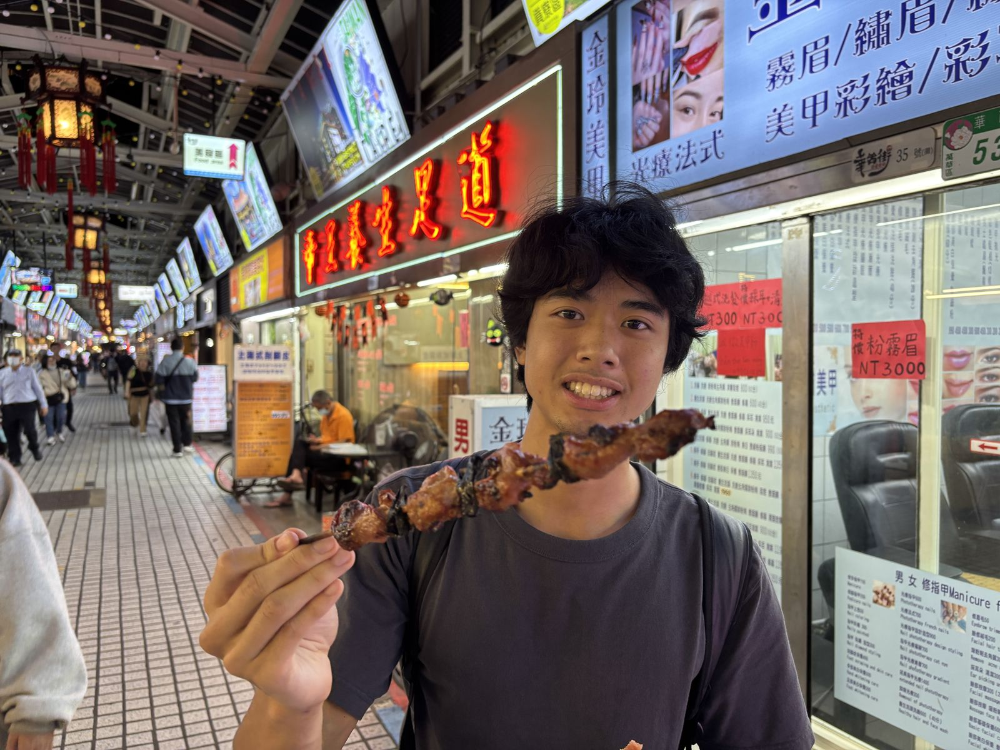

Food & 7-Eleven
Eating out in Taipei is cheap, so I almost never cook. These are the three places where I eat most of the time.

My Vietnamese restaurant
A small family restaurant close to my place. I go there for breakfast and dinner. If i go in the morning i usually get a bahn mi, in the evening a big bowl of pho or some meat with rice. Its cheap, fast and always so delicious!!
The 7-Eleven around the corner
7-Eleven in Taiwan is much more than a shop: you can pay bills, top up your EasyCard and buy a quick meal. My go to is two onigiri and a cold milk tea. Tip: they will ask if you want a bag, which costs a little extra. But a simple "Bu yau xie xie" works fine!

The street food street
Right where I live in my neighborhood there is a whole street of food stalls. Just point at what looks good and pay in cash.
What I eat and what it costs
Prices are rough and can change. 1 euro is about 35 NTD.
| Item | Where | Rough price (NTD) |
|---|---|---|
| Banh mi (breakfast) | Vietnamese restaurant | 70 - 90 |
| Bowl of pho (dinner) | Vietnamese restaurant | 120 - 160 |
| Onigiri (rice ball) | 7-Eleven | 30 - 45 |
| Bottle of tea or soft drink | 7-Eleven | 25 - 35 |
| Tea egg | 7-Eleven | 13 - 15 |
| Energy gel | 7-Eleven | 35 - 50 |
| Classic milk tea | 7-Eleven | 20 - 35 |
| Pepper bun | Street food street | 60 - 70 |
| Scallion pancake | Street food street | 40 - 60 |
| Grilled sausage | Street food street | 40 - 50 |
| Meat skewer | Street food street | 40 - 60 |
| Sweet potato balls | Street food street | 40 - 80 |